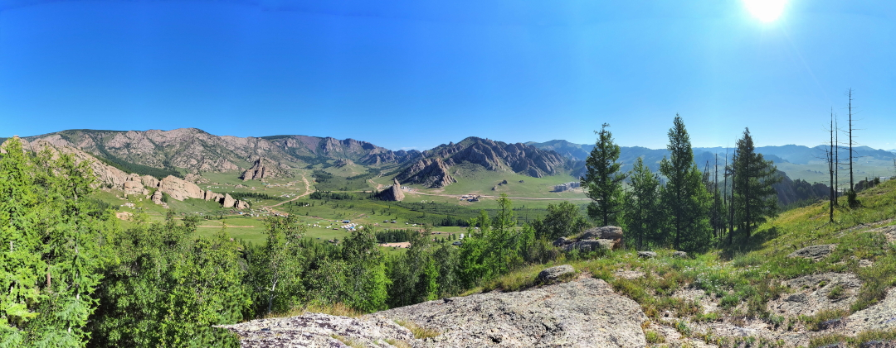
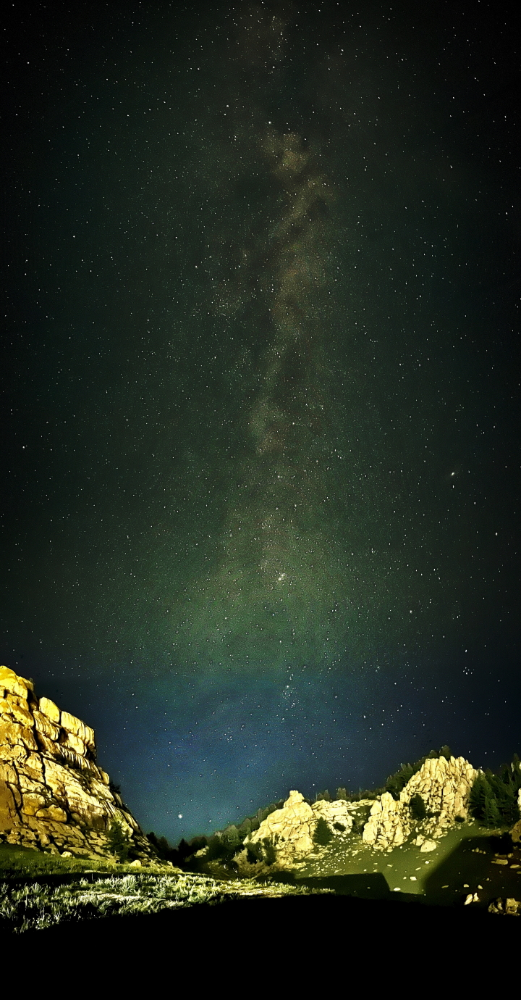
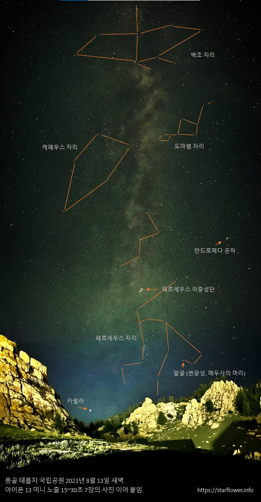
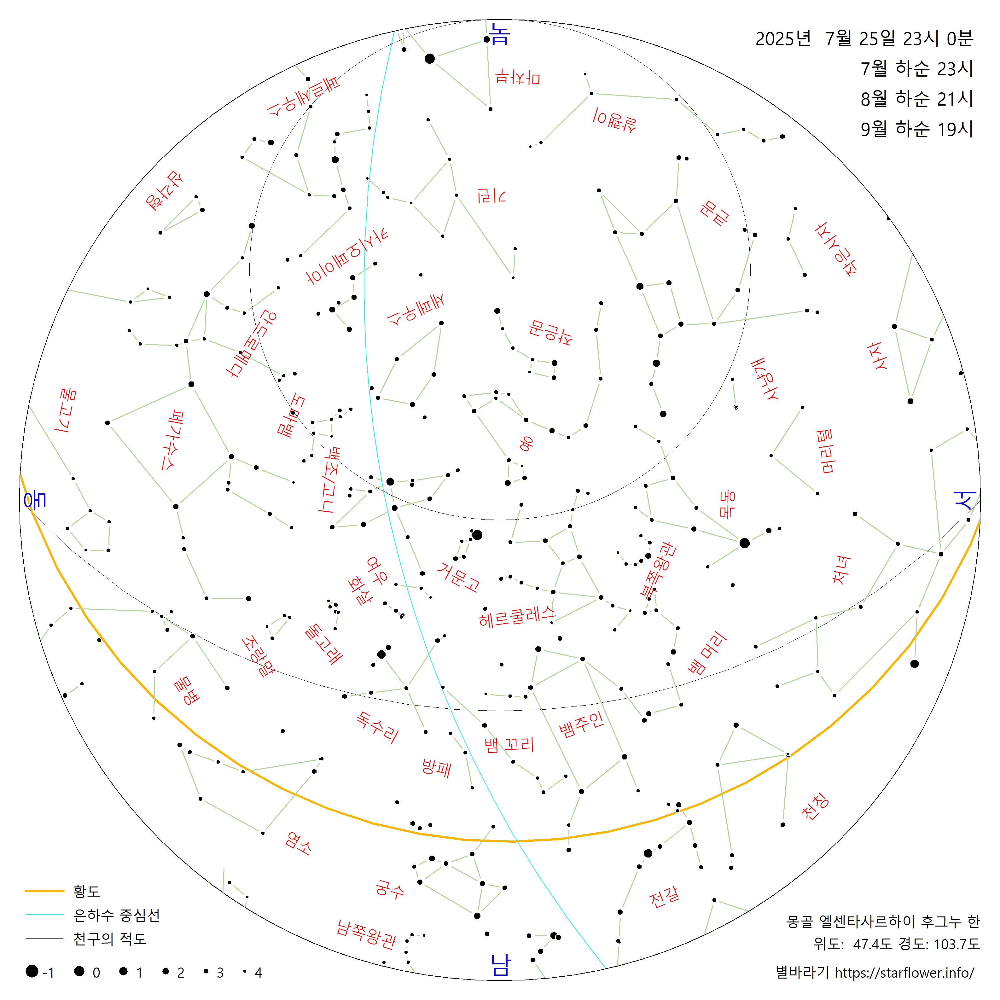
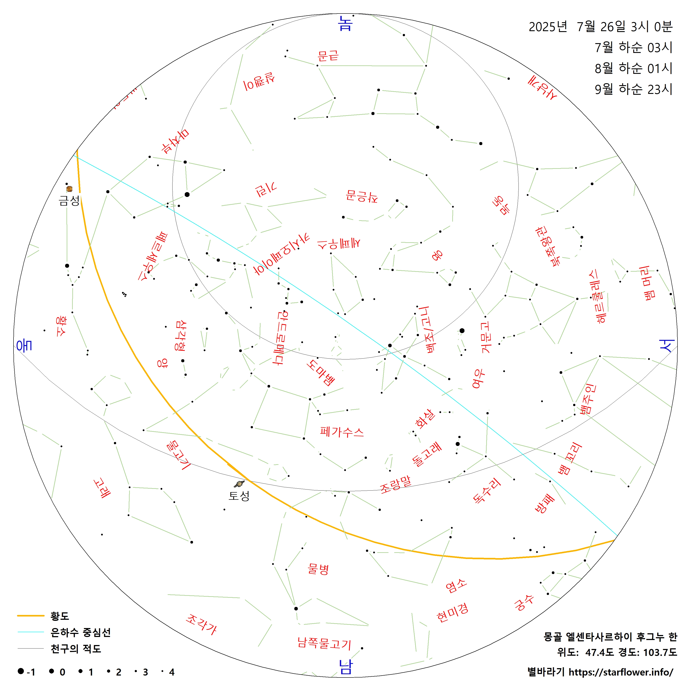
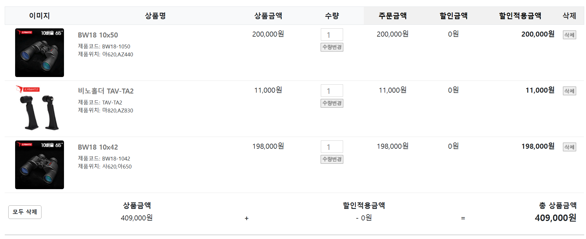

2025 몽골 밤하늘 탐사원정대 사전 준비
저를 소개합니다
- 윈도우즈용 천문 소프트웨어 별바라기 개발
- 2025년 2월 별바라기 별자리 성도 작성
- 별바라기 StarFlower 유뷰브 채널 운영. 동요 반달, 돈룩업, 용맹한 혜성 레너드 영상 한 번 보세요~
몽골은
- 푸른 하늘, 푸른 초원의 나라
- 맑디 맑은 밤하늘 & 쨍하게 보이는 은하수

몽골 테를지의 푸른 초원. Galaxy, 9장의 사진 이어 붙임, 2023.
|
 |
 |
| 아이폰 13 Mini 천체사진 모드 노출 15~30초, 7장의 사진을 이어 붙임, 2023 | |
- 배운점: 준비하고 노력한만큼 얻는다
- 2023 몽골 은하수 관측 여행
- 2024 몽골 밤하늘 탐사 원정, 별을 보고 싶었다~
은하수와 친해지기
- 인상파 과학·예술가가 그린 은하수
- 우리 은하의 아름다운 나선구조
- 백조팔, 오리온팔 이해. 밝은 별이 많이 보임
- 은하수를 따라 배치된 별자리 확인 (위 문서 맨 아래 청옥산 사진). 평면도 vs 실제 하늘
- 은하 평면도의 위, 아래 이해. 안드로메다는 은하 평면 아래쪽에 위치한다
- 밤 하늘의 보물 창고 은하 중심 방향
- 블랙홀, 파이프 성운, 다크호스 성운, 남두 육성
- 안타레스 부근 무서운 것: 사투르누스 성운
- 몽골에서는 고도가 낮아 관측이 제한적이다
- 칠월칠석의 견우·직녀, 백조
- 칠월칠석의 견우/직녀 만남을 도와 주자~
- 2025년 칠월칠석: 8월 29일
- 가을 미인 안드로메다와 백마의 기사 페르세우스
- 식상한, 그래도 재미있는 그리스 신화 이야기
- 안드로메다 은하 위치
- 찬란한 빛 시리우스와 비운의 사냥꾼 오리온
몽골의 밤하늘
- 저녁 천문박명: 23시 16분, 은하수 고도: 65도
- 새벽 천문박명: 03시 08분, 은하수 고도: 83도
|
 |
|
 |
사전 준비 필수템: 쌍안경 & 주변시 & 기록 남기기
- 쌍안경으로 충분히 아름다운 모습의 Deep Sky를 볼 수 있다. 관측의 즐거움이 배가 된다
- 망원경 보는 것에 친숙해지기 위해 반드시 필요. 가족 분들도 반드시 익숙해지도록 해 주세요
- 처음으로 망원경을 보면, '아무 것도 안 보여요'
- '아.. 이제 보여요. 그런데 뭘 보라는 거죠?'
- 쌍안의 입체적인 모습은 매우 매력적이다. 다만, 쌍안이 불편하면 한쪽 눈으로 보는 것부터 시작한다
- 암적응 10분 이상 매우 중요
- 주변시로 보는 것 매우 중요
- 대상의 주변을 바라보면 대상이 더 크고 밝게 보인다
- 최소 2배 이상 더 밝게 보인다. 구상성단의 별도 쉽게 분해된다
- 기록을 남긴다
- 좀 더 집중해서 관측하게 된다
- 묘사, 스케치, 관측 장소의 분위기/사진, 관측 조건 등 무엇이든 좋다
- 관측 기록 예시: 밤하늘의 보석 스케치
- 관측 조건: 투명도, 밝기, 시상, 육안 한계 등급
- 가장 큰 장점: 대상을 더 잘 이해하게 된다. 최후의 승자가 된다^^
- 쌍안경 구입 참고
- (주)니오
- 삼각대 및 연결 어댑터를 함께 구매하면, 안정적으로 대상을 관측할 수 있다

관측 대상 미리 보기
더 많은 관측 대상
별바라기 홈 > 관측 기록 및 장소 리뷰 >
최종 변경: 2025-04-11